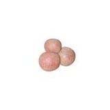

|  |
Owenia acidula Scientific classification Kingdom: Plantae Clade: Tracheophytes Clade: Angiosperms Clade: Eudicots Clade: Rosids Order: Sapindales Family: Meliaceae Genus: Owenia Species: O. acidula Binomial name Owenia acidula Owenia acidula, commonly known as emu apple, is small or medium-sized tree of outback woodlands native to Australia. It may grow to ten metres tall. The pinnate leaves are bright green and shiny, with leaflets 2–5 cm long. Broken twigs ooze a milky sap. The edible fruit is purplish-red with paler speckles, 2–4 cm wide with a large stone-like seed. Uses The fruit pulp is an Aboriginal bushfood and apparently causes hallucinations. They ripen after coming off the tree, and have a sour flavor. |